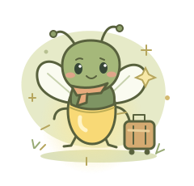

AI 旅行规划
智能旅行助手
从“我该去哪里？”到每天的行程安排，包含预算，也留出随时改变的空间。
规划一段旅程
幕后故事
The problem
A useful travel plan needs dates, preferences, routes, and costs to agree.
The implementation
A validated planning form, structured itineraries, calculated budgets, natural-language edits, and PDF export. Visitors can connect their own compatible AI model.
Try this
Plan a trip, then ask for a slower second day. Check how the schedule and budget change.
A functional reimplementation from a project brief. AI estimates need checking before travel.